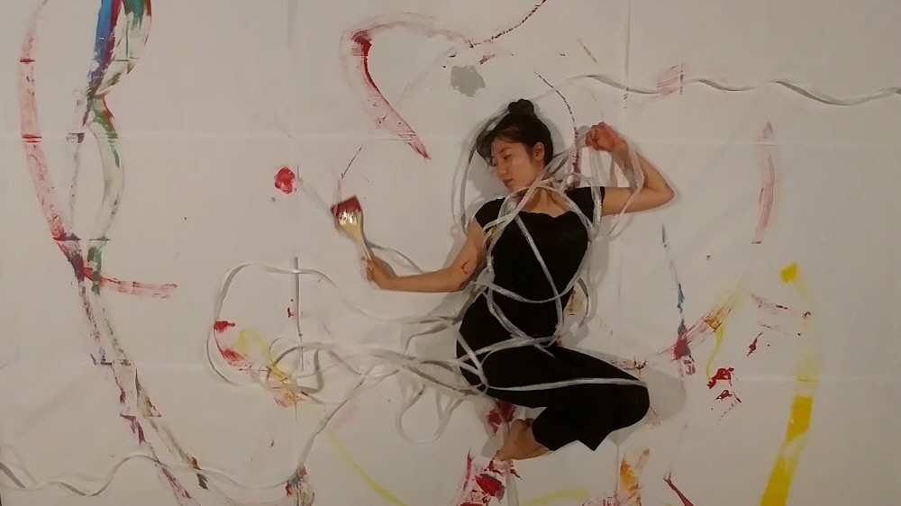

Entropy
Video art metaphor for entropy

My role: contents development, performance directing
Collaborator: Yukung Jung
An artwork made at the 2017 Artience Creation Challenge 30x30, a 30-hour nonstop collaboration with one artist. British Council Korea hosted the challenge, and the Daejeon Culture and Arts Foundation supported it. For the challenge topic, ageing, we chose entropy, a measure of disorder that sets the direction of time.
The video shows entropy increasing as a person ages. The performer fills white drawing paper named time with paint named life, while a rope named disorder covers her. Like life itself, she struggles: she grips and drops the brush and tries to break the rope. Within the natural, irreversible flow of entropy, she finally accepts the disorder that covers her whole body, and is at ease.
The competition started from zero, so the team had to find a compact way to express ageing as a metaphor. We talked for about 6 hours, sharing each other's knowledge, experience, and techniques.


My partner had studied ballet for about 10 years. That strength let us express ageing through a tangled rope and randomly painted paper, which also resemble the idea of entropy. Limited time and resources meant shooting with non-professional equipment, on location, with everyday objects.

Bridging two different backgrounds through 30 hours of nonstop work produced a clear visual metaphor for entropy and ageing. The work conveyed entropy and ageing intuitively to the judges and participants and won Runner-Up in the competition.